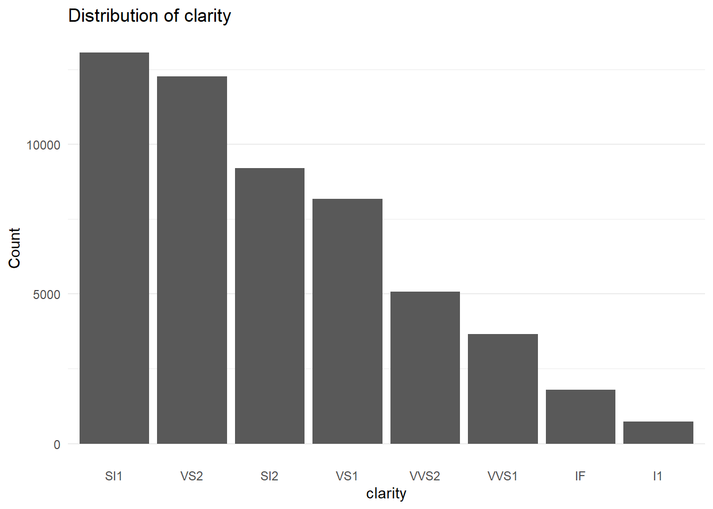
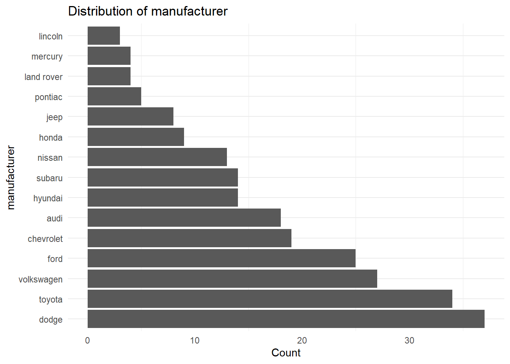
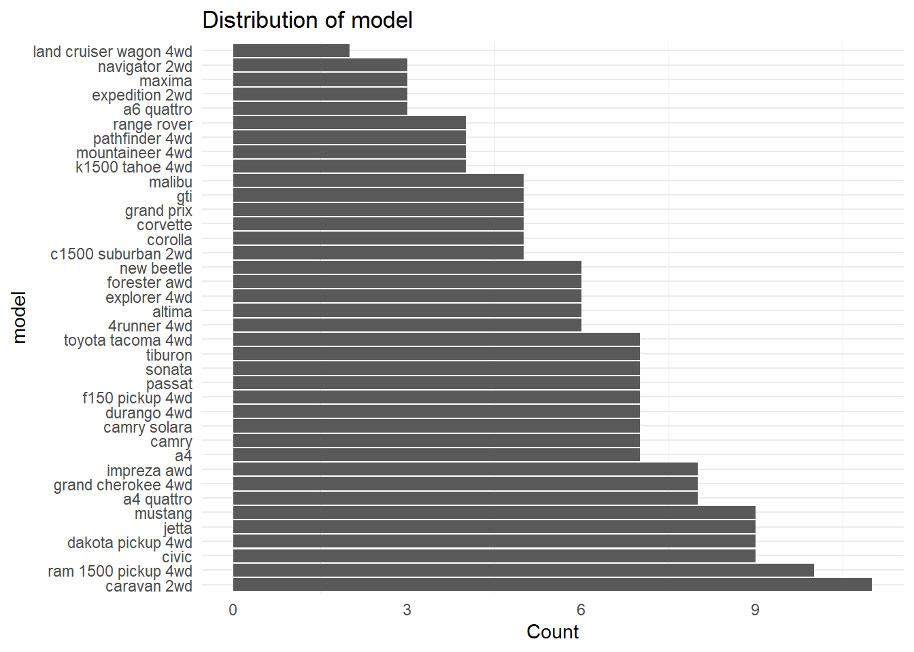
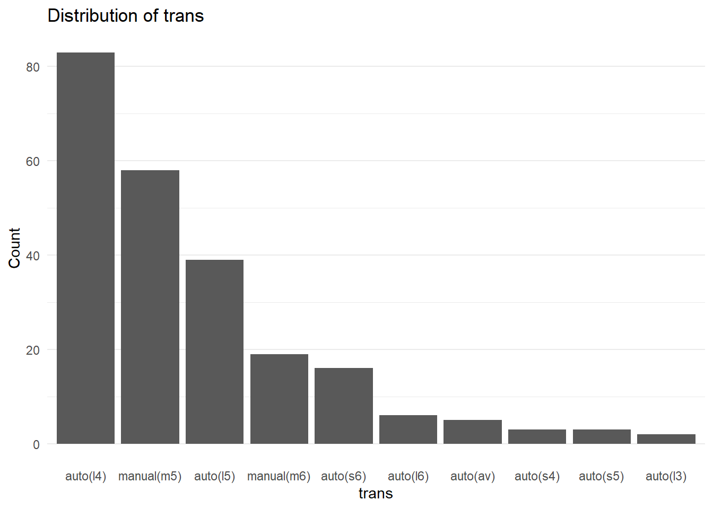
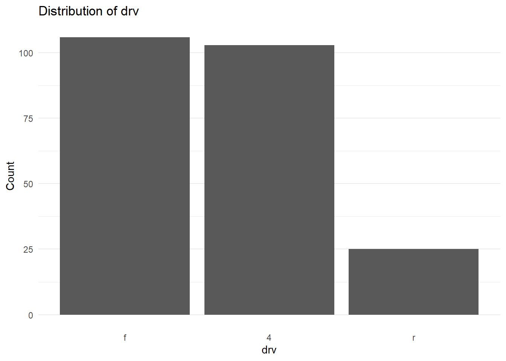
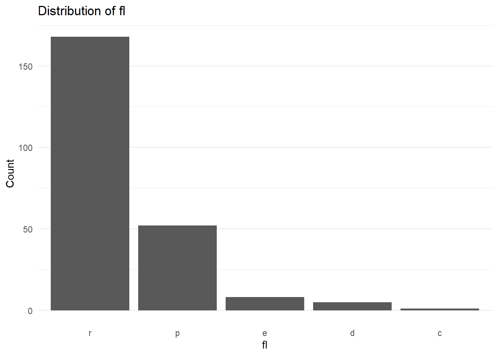
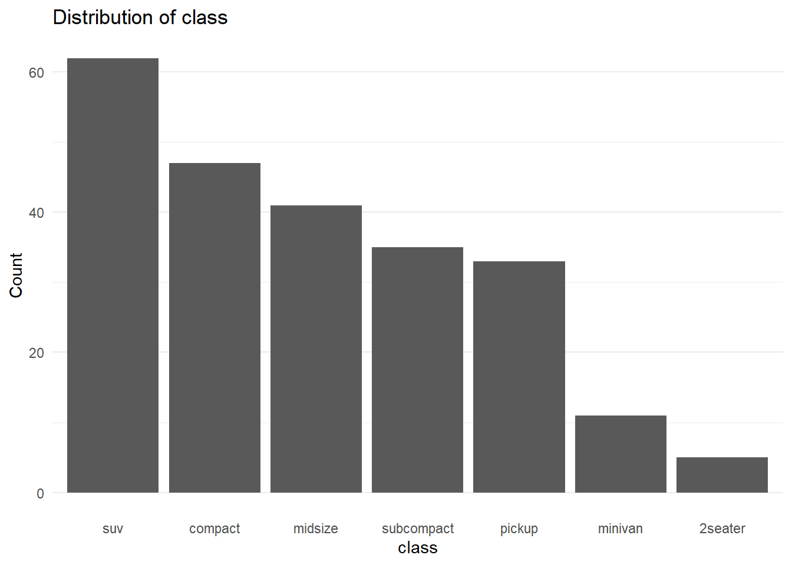

library(tidyverse)
library(nycflights13)Lab 6 - Alternative
Contributing to R for Data Science
The exercises from the functions below were pulled from the newest version of R for Data Science. Specifically, from Chapters 25 and 26. For this “alternative” lab you will complete the exercises from the textbook, with the option of submitting a pull request to the repository for the textbook solutions.
Vector Functions
Question 1: The rescale01() function below performs a min-max scaling to standardize a numeric vector, but infinite values are left unchanged. Rewrite rescale01() so that -Inf is mapped to 0, and Inf is mapped to 1? *Hint: This seems like a great place for case_when()!
rescale01 <- function(x) {
if (!is.vector(x)) {
stop("The input for `x` must be a vector.")
}
x <- case_when(
x == Inf ~ 1,
x == -Inf ~ 0,
TRUE ~ x
)
rng <- range(x, na.rm = TRUE, finite = TRUE)
(x - rng[1]) / (rng[2] - rng[1])
}
rescale01(c(1, 2, 3, 4, 5, Inf, -Inf))[1] 0.2 0.4 0.6 0.8 1.0 0.2 0.0Question 2: Write a function that accepts a vector of birthdates and computes the age of each person in years.
age_calc <- function(birthdates) {
if (!is.vector(birthdates)) {
stop("The input for `birthdates` must be a vector.")
}
birthdates <- as.Date(birthdates)
today <- Sys.Date()
ages <- as.integer((today - birthdates) / 365.25)
return(ages)
}
age_calc(c("2001-08-30", "2003-08-08", "2005-08-31", "1100-03-07"))[1] 23 21 19 925Question 3: Write a function that computes the variance and skewness of a numeric vector. Feel free to look up the definitions on Wikipedia or elsewhere!
var_skew <- function(x){
if (!is.vector(x)) {
stop("The input for `x` must be a vector.")
}
variance <- var(x)
n <- length(x)
mean <- mean(x)
sd <- sd(x)
skewness <- (sum((x - mean)^3)/(n * sd^3))
return(list(variance = variance, skewness = skewness))
}
var_skew(c(1,2,3,4,11037))$variance
[1] 24352039
$skewness
[1] 1.073312Question 4: Write a function called both_na() which takes two vectors of the same length and returns the number of positions that have an NA in both vectors.
both_na <- function(V1, V2){
if (!is.vector(V1) | !is.vector(V2)) {
stop("The input for `V1` and 'V2' must be a vector.")
}
if (length(V1) != length(V2)) {
stop("make those vectors the same length or ELSE")
}
total_both_na_positions <- sum(is.na(V1) & is.na(V2))
return(total_both_na_positions)
}
both_na(c(NA, NA, 11037), c(NA, 1, 2))[1] 1Data Frame Functions
Question 5: Insert the data frame function you wrote from Lab 6 (either Exercise 1 or Exercise 2).
remove_outliers <- function(df, ..., sd_thresh = 3){
#error cases for df and sd_thresh
if (!is.data.frame(df)) {
stop("df must be a data frame please!!!!!!!")
}
if (!is.numeric(sd_thresh) | sd_thresh <= 0) {
stop("sd_thresh has to be a positive number please!!!!!!")
}
#turn everything in ellipses to quosures
names_quosures <- enquos(...)
#take everything in names_quosures and extracts the names as character strings
names <- map_chr(names_quosures, quo_name)
#error cases for the names/...
if (length(names) < 1) {
stop("provide column names to remove outliers from please bro")
}
if (!is.character(names)) {
stop("column names must be character strings!! ")
}
if (!all(names %in% names(df))) {
stop("the column(s) are not in the data frame :(")
}
#meat of the function. check if the col is numeric, calc z score and then . way to do this without for looping?
df_RO <- df
for (name in names) {
if (!is.numeric(df_RO[[name]])) {
warning(paste("Skipping non-numeric column ", name))
next
}
mean <- mean(df_RO[[name]], na.rm = TRUE)
sd <- sd(df_RO[[name]], na.rm = TRUE)
abs_z <- abs((df_RO[[name]] - mean) / sd)
df_RO <- df_RO[abs_z <= sd_thresh | is.na(abs_z), ]
}
return(df_RO)
}
## Testing how your function handles multiple input variables
remove_outliers(diamonds,
price,
x,
y,
z)# A tibble: 52,673 × 10
carat cut color clarity depth table price x y z
<dbl> <ord> <ord> <ord> <dbl> <dbl> <int> <dbl> <dbl> <dbl>
1 0.23 Ideal E SI2 61.5 55 326 3.95 3.98 2.43
2 0.21 Premium E SI1 59.8 61 326 3.89 3.84 2.31
3 0.23 Good E VS1 56.9 65 327 4.05 4.07 2.31
4 0.29 Premium I VS2 62.4 58 334 4.2 4.23 2.63
5 0.31 Good J SI2 63.3 58 335 4.34 4.35 2.75
6 0.24 Very Good J VVS2 62.8 57 336 3.94 3.96 2.48
7 0.24 Very Good I VVS1 62.3 57 336 3.95 3.98 2.47
8 0.26 Very Good H SI1 61.9 55 337 4.07 4.11 2.53
9 0.22 Fair E VS2 65.1 61 337 3.87 3.78 2.49
10 0.23 Very Good H VS1 59.4 61 338 4 4.05 2.39
# ℹ 52,663 more rows## Testing how your function handles an input that isn't numeric
remove_outliers(diamonds,
price,
color)Warning in remove_outliers(diamonds, price, color): Skipping non-numeric column
color# A tibble: 52,734 × 10
carat cut color clarity depth table price x y z
<dbl> <ord> <ord> <ord> <dbl> <dbl> <int> <dbl> <dbl> <dbl>
1 0.23 Ideal E SI2 61.5 55 326 3.95 3.98 2.43
2 0.21 Premium E SI1 59.8 61 326 3.89 3.84 2.31
3 0.23 Good E VS1 56.9 65 327 4.05 4.07 2.31
4 0.29 Premium I VS2 62.4 58 334 4.2 4.23 2.63
5 0.31 Good J SI2 63.3 58 335 4.34 4.35 2.75
6 0.24 Very Good J VVS2 62.8 57 336 3.94 3.96 2.48
7 0.24 Very Good I VVS1 62.3 57 336 3.95 3.98 2.47
8 0.26 Very Good H SI1 61.9 55 337 4.07 4.11 2.53
9 0.22 Fair E VS2 65.1 61 337 3.87 3.78 2.49
10 0.23 Very Good H VS1 59.4 61 338 4 4.05 2.39
# ℹ 52,724 more rows## Testing how your function handles a non-default sd_thresh
remove_outliers(diamonds,
price,
x,
y,
z,
sd_thresh = 2)# A tibble: 48,955 × 10
carat cut color clarity depth table price x y z
<dbl> <ord> <ord> <ord> <dbl> <dbl> <int> <dbl> <dbl> <dbl>
1 0.23 Ideal E SI2 61.5 55 326 3.95 3.98 2.43
2 0.21 Premium E SI1 59.8 61 326 3.89 3.84 2.31
3 0.23 Good E VS1 56.9 65 327 4.05 4.07 2.31
4 0.29 Premium I VS2 62.4 58 334 4.2 4.23 2.63
5 0.31 Good J SI2 63.3 58 335 4.34 4.35 2.75
6 0.24 Very Good J VVS2 62.8 57 336 3.94 3.96 2.48
7 0.24 Very Good I VVS1 62.3 57 336 3.95 3.98 2.47
8 0.26 Very Good H SI1 61.9 55 337 4.07 4.11 2.53
9 0.22 Fair E VS2 65.1 61 337 3.87 3.78 2.49
10 0.23 Very Good H VS1 59.4 61 338 4 4.05 2.39
# ℹ 48,945 more rowsFor Questions 6 - 10 you will write different functions which work with data similar to the nycflights13 data.
Question 6: Write a filter_severe() function that finds all flights that were cancelled (i.e. is.na(arr_time)) or delayed by more than an hour.
#assuming arrival or departure delay
filter_severe <- function(df, arrival_delay_var, departure_delay_var, arrival_time_var){
#checks to make sure all the supplied columns are numeric
non_num <- df %>%
select( {{ arrival_delay_var }}, {{departure_delay_var}}, {{arrival_time_var}}) %>%
sapply(is.numeric)
if (!all(non_num)) {
stop(
str_c("One of the columns you entered is not numeric.")
)
}
filtered_df <- df %>%
filter(is.na({{arrival_time_var}}) | {{arrival_delay_var}} > 60 | {{departure_delay_var}} > 60)
return(filtered_df)
}
filter_severe(flights, arr_delay, dep_delay, arr_time)# A tibble: 40,262 × 19
year month day dep_time sched_dep_time dep_delay arr_time sched_arr_time
<int> <int> <int> <int> <int> <dbl> <int> <int>
1 2013 1 1 811 630 101 1047 830
2 2013 1 1 826 715 71 1136 1045
3 2013 1 1 848 1835 853 1001 1950
4 2013 1 1 957 733 144 1056 853
5 2013 1 1 1114 900 134 1447 1222
6 2013 1 1 1120 944 96 1331 1213
7 2013 1 1 1255 1200 55 1451 1330
8 2013 1 1 1301 1150 71 1518 1345
9 2013 1 1 1337 1220 77 1649 1531
10 2013 1 1 1342 1320 22 1617 1504
# ℹ 40,252 more rows
# ℹ 11 more variables: arr_delay <dbl>, carrier <chr>, flight <int>,
# tailnum <chr>, origin <chr>, dest <chr>, air_time <dbl>, distance <dbl>,
# hour <dbl>, minute <dbl>, time_hour <dttm>Question 7: Write a summarize_severe() function that counts the number of cancelled flights and the number of flights delayed by more than an hour.
summarize_severe <- function(df, arrival_delay_var, departure_delay_var, arrival_time_var){
#checks to make sure all the supplied columns are numeric
non_num <- df %>%
select( {{ arrival_delay_var }}, {{departure_delay_var}}, {{arrival_time_var}}) %>%
sapply(is.numeric)
if (!all(non_num)) {
stop(
str_c("One of the columns you entered is not numeric.")
)
}
cancelled_count <- df %>%
filter(is.na({{arrival_time_var}})) %>%
count()
delayed_count <- df %>%
filter({{arrival_delay_var}} > 60 | {{departure_delay_var}} > 60) %>%
count()
output <- paste0("There are ", cancelled_count, " cancelled flights and there are ", delayed_count, " delayed flights, counting both arrival and departure delays.")
return(output)
}
summarize_severe(flights, arr_delay, dep_delay, arr_time)[1] "There are 8713 cancelled flights and there are 31705 delayed flights, counting both arrival and departure delays."Question 8: Modify your filter_severe() function to allow the user to supply the number of hours that should be used to filter the flights that were cancelled or delayed.
#assuming arrival or departure delay
filter_severe <- function(df, arrival_delay_var, departure_delay_var, arrival_time_var, hours = 1){
#checks to make sure all the supplied columns are numeric
non_num <- df %>%
select( {{ arrival_delay_var }}, {{departure_delay_var}}, {{arrival_time_var}}) %>%
sapply(is.numeric)
if (!all(non_num)) {
stop(
str_c("One of the columns you entered is not numeric.")
)
}
if (!is.numeric({{hours}})) {
stop(
str_c("You must use a number for the `hours` input!")
)
}
filtered_df <- df %>%
filter(is.na({{arrival_time_var}}) | {{arrival_delay_var}} > hours*60 | {{departure_delay_var}} > hours*60)
return(filtered_df)
}
filter_severe(flights, arr_delay, dep_delay, arr_time, hours=3)# A tibble: 13,161 × 19
year month day dep_time sched_dep_time dep_delay arr_time sched_arr_time
<int> <int> <int> <int> <int> <dbl> <int> <int>
1 2013 1 1 848 1835 853 1001 1950
2 2013 1 1 1815 1325 290 2120 1542
3 2013 1 1 1842 1422 260 1958 1535
4 2013 1 1 2006 1630 216 2230 1848
5 2013 1 1 2016 1930 46 NA 2220
6 2013 1 1 2115 1700 255 2330 1920
7 2013 1 1 2205 1720 285 46 2040
8 2013 1 1 2312 2000 192 21 2110
9 2013 1 1 2343 1724 379 314 1938
10 2013 1 1 NA 1630 NA NA 1815
# ℹ 13,151 more rows
# ℹ 11 more variables: arr_delay <dbl>, carrier <chr>, flight <int>,
# tailnum <chr>, origin <chr>, dest <chr>, air_time <dbl>, distance <dbl>,
# hour <dbl>, minute <dbl>, time_hour <dttm>Question 9: Write a summarize_weather() function that summarizes the weather to compute the minimum, mean, and maximum, of a user supplied variable.
summarize_weather <- function(df, variable){
non_num <- df %>%
pull( {{ variable }}) %>%
is.numeric()
if (!non_num) {
stop(
str_c("You must use a numeric variable for the `variable` input!")
)
}
df %>%
summarize(
min = min({{variable}}, na.rm = TRUE),
mean = mean({{variable}}, na.rm = TRUE),
max = max({{variable}}, na.rm=TRUE)
)
}
summarize_weather(weather, temp)# A tibble: 1 × 3
min mean max
<dbl> <dbl> <dbl>
1 10.9 55.3 100.Question 10: Write a standardize_time() function that converts the user supplied variable that uses clock time (e.g., dep_time, arr_time, etc.) into a decimal time (i.e. hours + (minutes / 60)).
standardize_time <- function(df, clock_time){
non_num <- df %>%
pull({{ clock_time }}) %>%
is.numeric()
if (!non_num) {
stop(
str_c("You must use a numeric variable for the `clock_time` input!")
)
}
df %>%
mutate(
{{clock_time}} := case_when(
!is.na({{clock_time}}) ~ floor({{clock_time}}/100) + ({{clock_time}} %% 100) / 60
)
)
}
standardize_time(flights, dep_time)# A tibble: 336,776 × 19
year month day dep_time sched_dep_time dep_delay arr_time sched_arr_time
<int> <int> <int> <dbl> <int> <dbl> <int> <int>
1 2013 1 1 5.28 515 2 830 819
2 2013 1 1 5.55 529 4 850 830
3 2013 1 1 5.7 540 2 923 850
4 2013 1 1 5.73 545 -1 1004 1022
5 2013 1 1 5.9 600 -6 812 837
6 2013 1 1 5.9 558 -4 740 728
7 2013 1 1 5.92 600 -5 913 854
8 2013 1 1 5.95 600 -3 709 723
9 2013 1 1 5.95 600 -3 838 846
10 2013 1 1 5.97 600 -2 753 745
# ℹ 336,766 more rows
# ℹ 11 more variables: arr_delay <dbl>, carrier <chr>, flight <int>,
# tailnum <chr>, origin <chr>, dest <chr>, air_time <dbl>, distance <dbl>,
# hour <dbl>, minute <dbl>, time_hour <dttm>Plotting Functions
You might want to read over the Plot Functions section of R for Data Science
Question 11: Build a sorted_bars() function which:
- takes a data frame and a variable as inputs and returns a vertical bar chart
- sorts the bars in decreasing order (largest to smallest)
- adds a title that includes the context of the variable being plotted
Hint 1: The fct_infreq() and fct_rev() functions from the forcats package will be helpful for sorting the bars! Hint 2: The englue() function from the rlang package will be helpful for adding a variable’s name into the plot title!
I also made it so that if a variable had more than 10 unique values, the bar chart would be horizontal since the names of each category tend to blend together when the bar chart is vertical.
sorted_bars <- function(df, var){
#check if var is correct data type
non_char_ord <- df %>%
pull({{ var }}) %>%
(\(x)is.character(x) | is.ordered(x) | is.factor(x))
if (!non_char_ord) {
stop(
str_c("You must use a character or factor for the `var` input!")
)
}
#use enquo to pull name of var
var_name <- rlang::as_name(enquo(var))
#count unique # of columns to determine if coord flipping later
total_vals <- n_distinct(df %>% pull({{ var }}))
p <- df %>%
ggplot(aes(x = fct_infreq(as.factor({{var}})))) +
geom_bar() +
labs(
title = rlang::englue("Distribution of { var_name }"),
x = var_name,
y = "Count"
) +
theme_minimal() +
theme(
panel.grid.major.x = element_blank()
)
if (total_vals > 10) {
p <- p + coord_flip()
}
return(p)
}
sorted_bars(diamonds, clarity)
Iteration
Alright, now let’s take our plotting function and iterate it!
Question 12: Make a sorted barplot for every character variable in the mpg dataset (built into ggplot2).
char_vars <- mpg %>%
select(where(is.character)) %>%
names()
map(char_vars, ~sorted_bars(mpg, !!sym(.x)))[[1]]
[[2]]
[[3]]
[[4]]
[[5]]
[[6]]
Contributing to the R for Data Science Community!
The functions you wrote for exercises 1-10 came from R for Data Science. You could consider making a pull request to the repository for the solutions!
https://github.com/mine-cetinkaya-rundel/r4ds-solutions
To learn more about how to make a pull request I would suggest this article: https://usethis.r-lib.org/articles/pr-functions.html